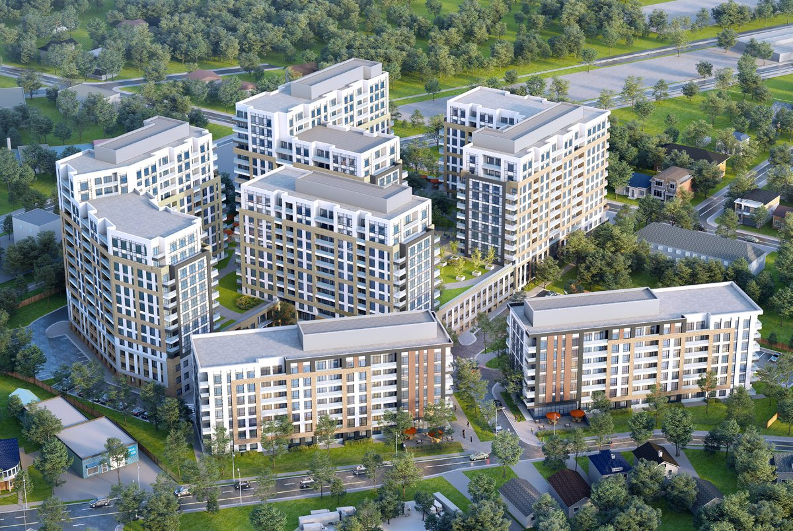
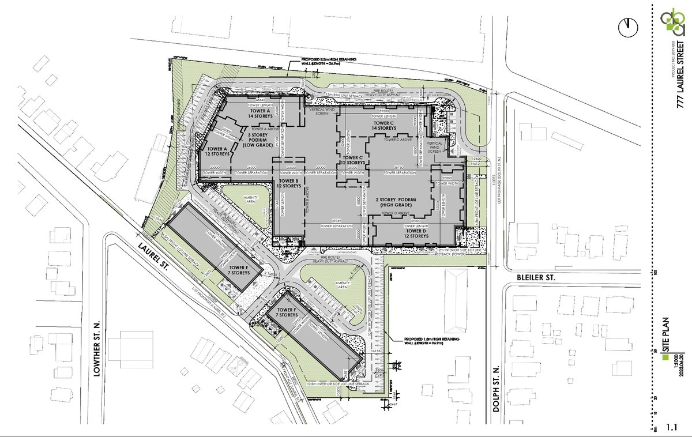
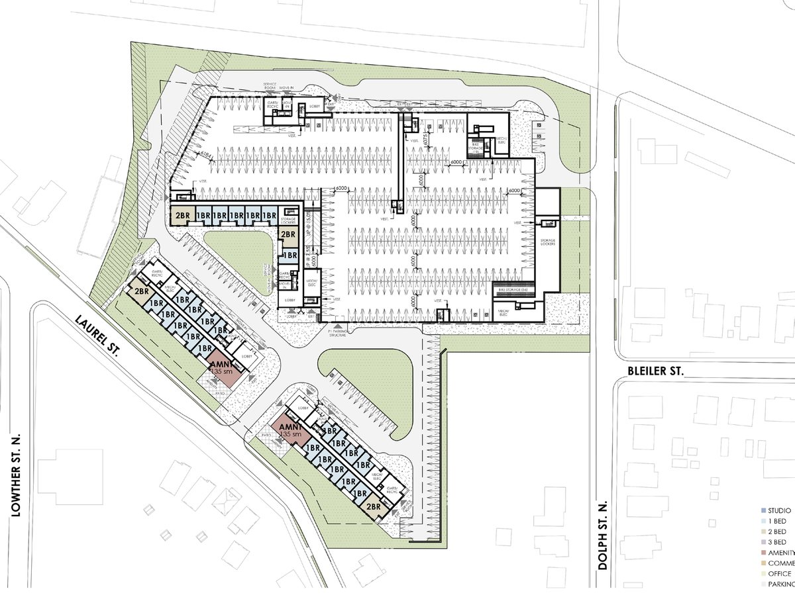

Professional · 2022-ongoing
Cambridge Highlight
A multi-building residential redevelopment introducing 1,046 apartment units and active street edges on a former industrial property.
Project Summary: This project transforms an existing industrial property into a multi-building residential community that introduces new housing within an evolving urban setting. The redevelopment replaces industrial buildings and paved storage areas with 1,046 apartment units across multiple buildings ranging up to 14 storeys, with provided parking ratio of 1 space per unit. The proposal includes two apartment buildings and a third multi-tower building atop a shared podium, creating an active street edge through articulated facades and street-facing patios. Central outdoor amenity spaces, rooftop terraces, and a combination of structured and surface parking support resident life and site functionality. Located near railway infrastructure and surrounded by mixed land uses, the project required Official Plan and Zoning By-law Amendments to enable the transition from employment lands to residential use.
Responsibilities: As an Intern Architect, I supported the project from early design concept through design development and planning approval stages, contributing from pre-consultation through the Zoning By-law Amendment and Official Plan Amendment submission process. My role included assisting with the development of the site plan, conceptual design studies, and preparation of the Terms of Reference. I contributed to space planning, floor plans, suite layouts, sections, elevations, material selection, facade studies, and site statistics, while also producing 3D massing models, visual perspectives, and precedent research to support design development. In addition, I assisted the project architect with the conceptual evolution of the site and coordinated the preparation and assembly of planning submission materials and documentation packages.




Related projects
Explore adjacent work

Waterloo Centerpiece
A high-density mixed-use district with seven buildings, thirteen towers, pedestrian-oriented streets, green spaces, and transit connectivity.

Erb Residential
A six-storey residential building in Waterloo with 91 units, 112 parking spaces, and a contemporary material palette.

Denver's Missing Middle
An evolutionary mixed-income townhouse community for Denver's Globeville neighborhood, designed around modular bays, live/work options, and shared outdoor amenities.